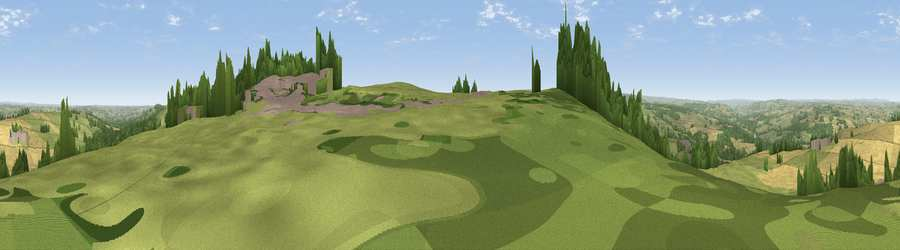

Viewpoint near Hedley on the Hill
#5753 in England · top 4% of its area beats it · near Hedley on the HillWhere it is
The exact computed spot (NZ 07730 59291). Click the marker for map links.
The view, rendered

A 360° render of this exact spot computed from the terrain model, tree cover and land cover — summer colours, afternoon light, calibrated against photographs of famous viewpoints. Real trees, hedges and buildings will differ in detail.
The panorama
Grey silhouette: terrain skyline in each direction (720 bearings, Earth curvature and refraction included). Dashed green: skyline with trees (+15 m) and buildings (+8 m) as obstacles. Blue strip: how far the ground is visible on each bearing.
Where the view opens
Wedge length = distance to the farthest visible ground on that bearing (vegetation-aware). Rings at 10, 25 and 50 km.
What fills the view
53% grassland · 29% cropland · 17% woodland · 1% built-up
Angular shares of the visible panorama (visual magnitude), not map area. Landscape diversity 0.46 (0–1 Shannon).
Key numbers
More beautiful places nearby
The staircase of upgrades: each row has a higher view potential than everything closer. Driving times are estimates from straight-line distance, calibrated against real road routing — check an actual route before setting out.
| Place | Direction | Drive | Score |
|---|---|---|---|
| Viewpoint near Hedley on the Hill | SSW · 1 km | ~2 min | 69.8 |
| Currock Hill | E · 2 km | ~5 min | 70.4 |
| Viewpoint near Hedley on the Hill | E · 2 km | ~6 min | 71.5 |
| Viewpoint near Greenside | ENE · 5 km | ~10 min | 74.2 |
| Pontop Pike | SE · 10 km | ~19 min | 77.8 |
| Viewpoint near Rothbury | N · 39 km | ~59 min | 81.1 |
| Dove Crag | N · 39 km | ~59 min | 82.3 |
| Viewpoint c12273_7856 | NNW · 56 km | ~78 min | 83.7 |
54.92824, -1.88090 · source: osm viewpoint · position refined by local search. Computed location — check access rights before visiting.